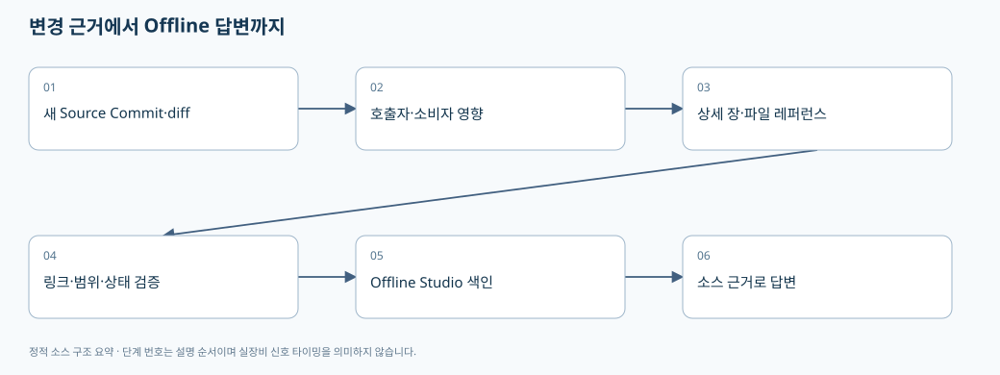

07. 변경 영향 검토와 Offline Studio에서 이 문서를 쓰는 방법
> 기준: A3Drilling/master · 5aee8e58439c9b455cae7c9593c9be986c3e682e. 본 장은 해당 Commit의 소스를 정적으로 읽어 설명합니다. 장비 연결·가공·컴파일을 실행한 결과가 아닙니다.
코드 레퍼런스는 현재 소스를 대신하는 정답 모음이 아니라 찾아갈 파일과 호출 연결을 제공하는 지도입니다. 문서가 최신 소스와 다른 Commit이면 틀린 기준으로 코드를 고칠 수 있으므로, 질문할 때 소스 Commit과 문서 기준을 함께 확인합니다.

flowchart LR
A[새 Source Commit] --> B[Git diff·변경 파일]
B --> C[호출자·소비자·저장 형식 영향]
C --> D[파일 레퍼런스·상세 챕터 갱신]
D --> E[Commit·줄 링크·검증 범위 기록]
E --> F[Offline Studio 색인]
F --> G[소스 근거를 먼저 검색해 답변]
1. 가장 먼저 볼 문서
| 궁금한 내용 | 시작할 장 | 실제 소스 진입점 |
|---|
| 앱이 안 켜지거나 다른 Config를 읽음 | 01 시작 | CAppStartup.GetConfigRoot / CManager 구성 |
| Recipe 값이 저장되지 않음 | 02 Recipe·Setting | CRecipeManager.Save → CJhmiRecipeFile.SaveCore |
| Offset가 원하는 방향으로 가지 않음 | 03 좌표·Script | CShotCoordinatePlanBuilder.Build |
| 기판/결과가 이전 상태로 보임 | 04 Product·Station | PersistAndLog / CProductFile.LoadCompactActive |
| 통신/SDK/모션 경로가 궁금함 | 05 장치 | CInterfaceManager / CComm / CMotionManager |
| 화면 지연·중복 실행·취소 문제 | 06 스레드·로그 | CtrlThread / Snapshot / gate·Dispatcher |
Review 좌표→Vision 요청→ReviewResult→보정 파일 연결은 별도의 리뷰 전문 챕터와 파일별 레퍼런스를 함께 읽습니다. 가공 ScannerGx/Gy를 찾았다는 이유만으로 그것이 Vision에 보내는 좌표라고 답변하면 안 됩니다.
2. 새 Parameter 하나가 거치는 영향 범위
| 단계 | 작성/검토할 항목 | 누락하면 생기는 현상 |
|---|
| 의미 정의 | 설비 공통/PPID별/Cell별/Shot별/런타임별 중 소유자, 단위·좌표기준 | 같은 이름을 서로 다른 기준으로 해석 |
| 정의 파일 | JHMI_RCP 또는 JHMI_SETTING, 타입·범위·표시·Use·Key | UI에 보이지 않거나 저장 때 제외 |
| 값 파서 | 기존 형식/legacy key/default/Extra 열 호환 | 구버전 Recipe를 못 읽음 |
| Manager | 캐시 갱신·변경 비교·gate·commit 이후 취소 | 화면과 파일이 달라짐·중복 보정 |
| 실행 합성 | Setting 덮어쓰기 우선순위·최신 Offset | 저장했는데 실행값이 다름 |
| 계산 | 단위 변환·axis flip/swap·Head 배정·Masking | 잘못된 위치 또는 다른 Head |
| Script/전송 | 스냅샷·manifest·controller/task 분리 | 이전 파일/다른 Controller 실행 |
| Product/결과 | 실제 적용값과 결과를 추적할 필드 | 사후 로그만으로 조건 재구성 불가 |
| UI | Property 변경 이벤트·선택상태·실행 중 편집 금지 | 수정값이 안 보이거나 도중 모델 교체 |
| 문서/색인 | 최신 Commit·파일 근거·용어·검증상태 | 개발도우미가 오래된 코드로 답변 |
현재 실행 합성의 Setting 우선순위는 BuildRuntimeParameters [오프라인 파일 해설], 저장/실행 기준의 분리는 Offset 변환·합성 [오프라인 파일 해설]에서 확인할 수 있습니다. 표는 그 구조를 확장해 적용하는 검토 절차입니다.
3. 기존 자료와 소스를 섞을 때의 신뢰도
| 출처 | 답변에 사용할 수 있는 범위 | 표기 방식 |
|---|
| 이번 Commit의 실제 소스 | 구현된 조건·필드·분기·저장 | 경로+함수+실제 줄 링크 |
| 회의 기록 | 사용자의 목적·희망 기능·평가 요구 | 구현 여부와 분리하여 요구로 설명 |
| 공식 SDK 설명자료 | 해당 버전 API 사양 | 자료명·버전·해당 항목 |
| 실행/빌드/실측 결과 | 실제 수행한 환경과 시나리오 | 명령·조건·결과·한계 |
| 자동 추출 호출 관계 | 찾아갈 후보와 연결 힌트 | 정적 후보, 오버로드/동적 호출 한계 |
| DLL 파일명 | 외부 의존성 존재 | 내부 로직은 미확인 |
문서에 검증 계획이라고 쓰인 항목은 실행 통과 항목이 아닙니다. 예를 들어 RunScript에는 Simulation 반환 분기가 있으므로 합성 응답을 받은 것만으로 실제 SDK·Controller compiler·물리 가공 검증까지 통과했다고 표현할 수 없습니다. Simulation RunScript 분기 [오프라인 파일 해설].
4. Offline Studio가 먼저 검색해야 할 단위
아래는 문서 활용 권장 방식입니다. 이 문서 생성만으로 Studio의 검색 엔진이나 모델 가중치가 자동 변경되는 것은 아닙니다.
1. 질문에서 행위+대상을 뽑습니다. 예: Review/좌표/계산/Vision/전달.
2. 코드 원문에서 함수·타입·Key 이름을 찾고 그 호출자와 저장/전송 소비자를 확장합니다.
3. 파일별 레퍼런스로 역할을 확인한 후 이 상세 챕터에서 전체 흐름을 보충합니다.
4. 출처마다 sourceCommit/path/startLine/endLine을 유지하고, 같은 Commit의 소스 본문을 모델 context에 함께 넣습니다.
5. 최종 답변은 파일명·함수·핵심 인자·입출력·호출 순서·확인 한계를 포함합니다.
소스 전체 대신 HTML 설명자료 한 줄만 모델에 제공하면 코드 근거를 찾을 수 없습니다. 반대로 DLL 안내가 검색 상단을 차지해 C# 래퍼가 밀려나도 동문서답이 생길 수 있습니다. 코드 질문은 실제 C#/XAML/설정/Script 연결을 우선, 설명자료는 보충이라는 검색 목적을 설정하는 것이 좋습니다. 이는 과거 오류에서 도출한 개선 지침이며 현재 Studio가 해당 우선순위를 이미 구현했다는 주장은 아닙니다.
5. 좋은 답변의 최소 형식
요약: 이 기능은 A → B → C 순서로 처리됩니다.
1. [파일:줄] 함수 A: 입력과 호출자
2. [파일:줄] 함수 B: 단위/좌표 변환, 조건
3. [파일:줄] 함수 C: 저장/전송 대상과 응답 처리
변경 영향: 같은 데이터를 쓰는 다른 경로
검증: 실제 수행한 것 / 아직 해야 할 것
“자료에 없으니 못 찾는다”라고 끝내기 전에 색인된 소스 경로·파일 수·검색어·후보 누락 여부를 확인해야 합니다. 다만 실제 소스에 없는 계약을 억지로 추론해서 답변하지 않습니다. 예를 들어 Stage Glass/Lot 매핑 TODO가 남은 경로는 합의 완료로 설명하지 않습니다. 미합의 매핑 표시 [오프라인 파일 해설].
6. 주석을 많이 쓸 때도 우선순위가 필요하다
각 소스파일의 주석형 레퍼런스를 작성할 때 아래 항목을 우선 설명합니다. 공개 레퍼런스의 설명은 원본 코드가 바뀐 것과 구분되어야 합니다.
| 위치 | 상세 주석에 담을 내용 |
|---|
| Public API/Command | 어떤 화면/시퀀스가 언제 호출하는가, 인자의 단위·허용범위 |
| 좌표 수식 | 설계/Stage/Scanner/Vision 기준, 부호·scale·반전 순서 |
| 필드/record | 현재 상태인지 스냅샷인지, 파일 영속 여부 |
| 저장 함수 | 검증·쓰기·재읽기·메모리 publish·이력의 순서와 실패 경계 |
| lock/gate | 보호 대상과 획득 순서, lock 안에서의 외부 호출 |
| 취소/finally | 취소 가능한 시점, 부분 적용 후 처리, cleanup 책임 |
| enum/state | 전이 조건과 정상/Stop/Error/Skipped 구분 |
| fallback/default | 구버전 호환인지 설치 기본값인지 임시 미합의값인지 |
| 미확인 | 코드에 근거가 없어 판정할 수 없는 조건 |
예시: Product PersistAndLog는 Active 저장 후 로그 실패가 전이를 뒤집지 않게 처리합니다. 여기에는 단순히 “로그 저장”이 아니라 이미 커밋된 상태를 중복 실행시키지 않는 경계를 설명하는 것이 유용합니다. 주석 우선순위가 높은 commit 경계 [오프라인 파일 해설].
7. 주기적 업데이트의 완료 조건
• 새 원본 Commit을 확인하고 이전 문서 기준과 비교합니다.
• 변경 파일만 요약하지 않고 해당 함수의 호출자·데이터 소비자·저장 호환 영향을 추적합니다.
• sourceCommit이 다른 문서가 한 질문 context에서 섞이지 않게 표시합니다.
• 링크의 실제 파일·줄 범위, 내부 링크, Mermaid 코드 블록, 깨진 문자, 공백 오류를 검사합니다.
• 실행하지 않은 빌드·장비·실측은 미실행으로 남깁니다.
• 최신 자료의 생성과 Offline Studio의 재색인은 별도 단계로 기록합니다.
이 장은 유지보수 절차와 지식 사용 방법을 설명합니다. 예약 실행의 실제 등록·Push·최신화 결과는 이 문서 자체가 아니라 해당 작업 기록과 Shared Commit으로 확인해야 합니다.